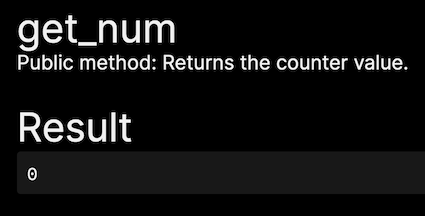

Using RAEN Admin
Now that your contract has code embedded in it a React form can be created for each contract method.
Let's look at counter.raendev.testnet.
View Methods
First to notice on the top left you have a login button and a list of the view methods

Clicking on get_num will immediately call the view method since it has no arguments.
You can also notice that the comment from the code is displayed helping to describe the method.

Change Methods
Below the View Methods are the change methods which update the contract state.

Let's pick reset.

Again you can see the comments from the code. However, now there are two new fields in the form.
-
attachedDepositis how much near you want to attach to the transaction; it is in yoctoNear, which is the smallest unit of NEAR (1N = 1000000000000000000000000 yNor10^24). -
gasis how much gas to attach to cover the execution costs. It is in units of gas here30 Terra gas, which is more than enough for this transaction.
Clicking on Submit will use the key added from logging in to make the transaction. Since this call doesn't require any NEAR we don't need to personally sign the transaction.
Returning to get_num you should see that it is now 0.